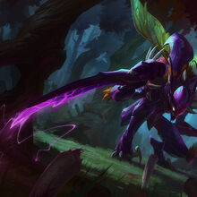

El Vacio
Es el hogar de las aberraciones mas horribles de la creacion. Se dice que nacio junto con Runaterra, siendo esta su contraparte, sin magia, sin luz, solo oscuridad y muerte. El Vacio fue convocado en su momento por un antiguo reino para luchar contra la poderosa Shurima, sin saber que traerian el caos a toda Runaterra. Actualmente hay grietas al Vacio por todas las regiones, esperando el momento justo para resurgir y deborarlo toto a su paso.
Algunos de los campeones mas importantes son:
|  |
|---|